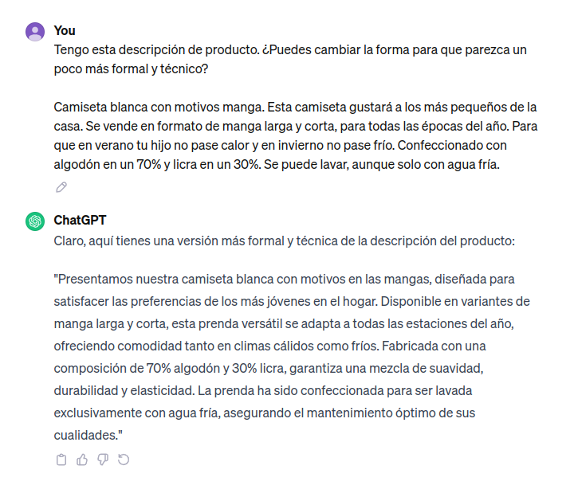
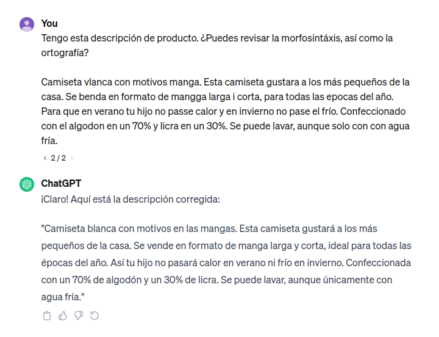
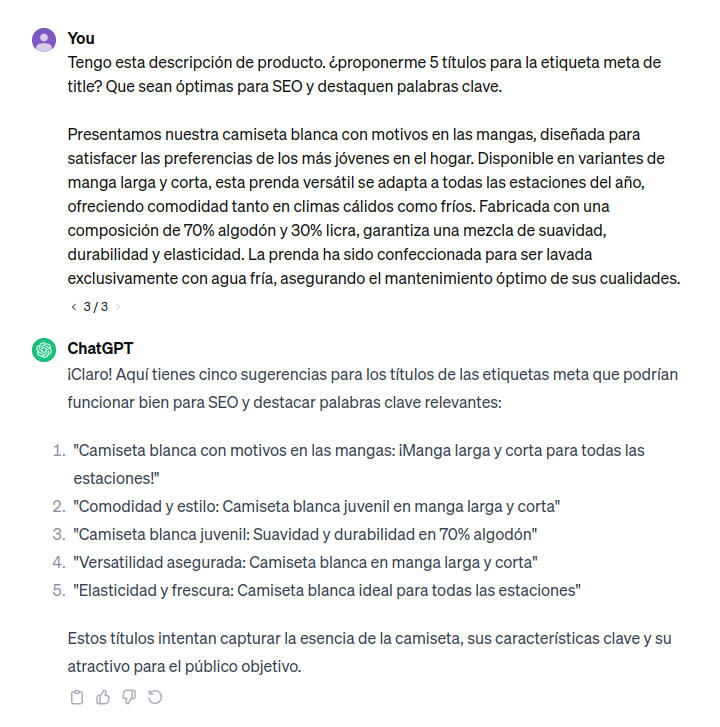
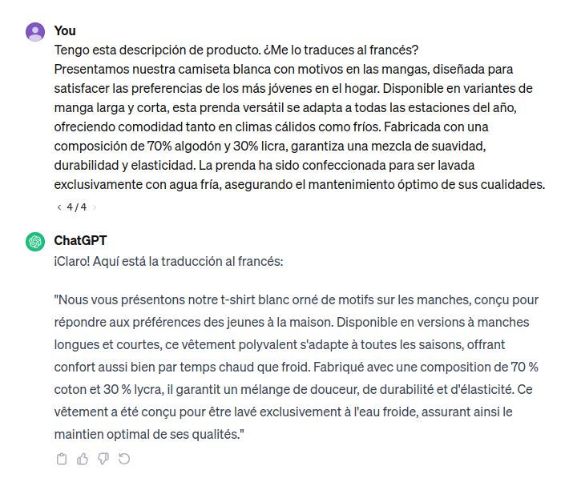

7 formas de utilizar la inteligencia artificial en tu tienda online
 Escrito por Marc Morera
Escrito por Marc Morera
12 diciembre, 2023
Entre tanta información a la que nos están sometiendo en estos últimos tiempos y la ansiedad que esto nos provoca a muchas personas, es hora de inspirar y expirar un poco, sentarnos en la mesa de trabajo y empezar a pensar cómo todas estas aplicaciones y tecnologías que están surgiendo pueden ayudar a nuestra tienda online. Desde las inteligencias artificiales generativas, como la ya más que conocida ChatGPT, hasta modelos que se encargan de procesar e interpretar imágenes, en este post revisaremos algunas de las aplicaciones más interesantes que pueden tener estos modelos en nuestra tienda online, siempre con el único objetivo de mejorar la experiencia de nuestros usuarios y, por ende, aumentar nuestra conversión. En ningún caso entraremos en detalles técnicos, solo a niveles conceptuales y con ejemplos prácticos, por lo que no se requieren conocimientos de ningún tipo para seguir el hilo.
Y es que de nada sirve esta tecnología si no podemos o no sabemos sacarle el máximo partido.
Tabla de contenidos
- Búsqueda por imagen
- Búsquedas semánticas
- Productos sugeridos y relacionados
- Generación de descripciones y metadatos
- Traducción de contenido
- Segmentación de usuarios
- Atención al cliente generativa
Búsqueda por imágen
Imaginad a Pablo, un usuario de 20 años, delante de su tienda favorita de zapatillas. Pablo se mira un par de zapatillas rojas a un precio desorbitado. Y es que no puede mirar otra cosa, pero tampoco pagar con el dinero que tiene ahorrado. Pablo siempre compra su calzado en tu tienda online, pero aquellas zapatillas rojas... nunca había visto nada igual. ¡Tremendas!
Pablo entra en tu tienda online y se decide a buscar algo parecido. Se encuentra con un buscador en el que puede escribir "zapatillas rojas", pero resulta que tu tienda devuelve 300 resultados. ¿Tendrás algunas que sean parecidas a las que Pablo está buscando? Cruza los dedos.
Y es que muchas veces lo visual entra mucho más que cualquier otro medio sensorial, y tenemos que estar preparados para ello. Tenemos que ofrecer la opción de que Pablo simplemente le eche una foto a estas zapatillas que tiene delante y, aparte de mandársela a sus amigos, pueda buscarla también en tu tienda online, solo con la imagen. Sin tener que escribir absolutamente nada más.
Adivina. Pablo encontró algo muy parecido en tu tienda online, y no solo las compró, sino que luego avisó a todos sus amigos para decirles que en tu tienda online las vendes también en color verde y azul. ¡Una victoria!
Todo esto es posible gracias a modelos que permiten relacionar imágenes según el contenido. La forma en la que lo hacen entraría en detalles técnicos en los que no entraremos, pero esto permite brindar una nueva vía de entrada a los usuarios para que siempre tengan distintas opciones para elegir. A destacar, buscar por palabras, cámara y micrófono.
Búsquedas semánticas
Siguiendo con Pablo, que parece que tiene muchísimas ganas de comprar esta mañana, decide buscar también una camiseta de su serie favorita. A Pablo no le van las series de policías ni de ciencia ficción. A Pablo, cuando llega a casa exhausto después de un día largo e intenso, le gusta sentarse en el sofá y mirar un par de capítulos de sus series freaks. Nada nuevo en la vida de Pablo.
Ahora que hablamos de camisetas, resulta que tú tienes una tienda online de camisetas en las que vendes distintas temáticas, personajes y colores. Películas, series y videojuegos. Todo un mundo plasmado en camisetas blancas, rojas y azules.
Esta mañana, como decíamos, Pablo entra en vuestra web y le apetece buscar una camiseta de una serie que miraba cuando era pequeño. No se acuerda de su nombre, pero se acuerda de un monstruito pequeño, amarillo, que lanzaba bolas eléctricas para vencer a sus oponentes. Pablo tiene una memoria de pez, pero le gustaba tanto aquella serie... Y quienes somos nosotros para privar a Pablo de una gran experiencia en nuestra web y su portal favorito de camisetas.
Pues nada, Pablo, ilusionado, lo que buscará será "Monstruo amarillo eléctrico". ¿Os suena? En realidad, estoy bastante convencido de que vuestra web devolverá 0 resultados, y es que nos centramos mucho (demasiado) en aquellas búsquedas que creemos que nuestros usuarios harán sin pensar. ¿Quién no conoce a los Pokémon? ¿Quién no recuerda el nombre del Pokémon por excelencia? Bien. Mucha más gente de la que os pensáis. No todo el mundo pertenece a nuestra generación, y mucha gente, y más en tiempos de tanta globalización, los argots cambian de forma continua y sin avisar.
Genial. Vamos a solucionar este problema. Añadamos pues un sinónimo para que cuando se busque "Monstruo amarillo eléctrico" mostremos artículos de Pikachu. De hecho, esta es la solución que se plantea siempre por defecto en todos los casos que se presentan de este estilo. ¿Tiene sentido, no?
Pues la verdad es que no. A corto plazo, puede que sí. A medio y largo plazo, en absoluto. Un buscador debería ofrecer soluciones abstractas de base. Configurar sinónimos puede ser una tarea muy compleja, sobre todo si tenemos un long tail de búsquedas sin resultado muy grande. Invertir tiempo en esto solo nos permitirá solucionar las situaciones una a una, y esto no es escalable. Por esto existe lo que llamamos búsqueda semántica. En una búsqueda semántica, "Monstruo amarillo eléctrico" es casi igual que "Pikachu" de base. Se busca por concepto, no por palabras, sin tener que configurar nada. Dicha búsqueda puede ser complementaria a la búsqueda por palabras a la que estamos acostumbrados, dotando a la búsqueda de un extra de conocimiento infinito sobre palabras clave y frases más descriptivas.
Esta técnica reduce drásticamente el número de búsquedas sin resultado, y aunque resulte complejo dar resultados 100% lógicos en todos los casos, los buenos modelos de búsqueda semántica suelen acertar bastante y ser muy resolutivos desde una perspectiva global.
Pablo ya recuerda el nombre, pero no le hizo falta para comprar su camiseta de Pikachu. ¡Bien jugado!
Productos sugeridos y relacionados
¿Has comprado alguna vez en Amazon? Probablemente sí, y probablemente también alguna vez te has preguntado por qué una plataforma como Amazon funciona tan bien. Estoy seguro de que hay cientos de variables que hacen que una plataforma tan sumamente grande proporcione una experiencia de usuario tan buena, fluida y con una conversión tan grande, pero si una de ellas probablemente destaque bastante sobre las demás, es la capacidad que tiene la plataforma de producir productos relacionados de forma dinámica. Solo para nosotros.
Estas técnicas se pueden implementar con algoritmos ajenos a la inteligencia artificial, aunque suelen ser bastante planos y poco densos. Entrenando modelos con tus propios datos puedes llegar a tener resultados mejores y más eficientes. Vamos a ver algunas de las opciones que tenemos en cualquier tienda online.
- Productos vistos anteriormente: Una de las bases del conocido retargeting es que ver un producto por segunda y tercera vez incrementa sustancialmente el porcentaje de conversión. Ofrecer a un usuario productos vistos anteriormente puede ofrecer segundas y terceras oportunidades a un usuario de comprar aquello que eventualmente no pudo comprar por las razones que fueren.
- Productos relacionados y complementarios con un producto: Habitualmente presentes en la página de producto, nos proporciona alternativas (con más margen) a un producto específico, productos relacionados con el mismo o, y algo muy importante y poco implementado, productos complementarios. Estos últimos se generan en función de los productos que otros usuarios han comprado conjuntamente con el producto que estás visitando. El "Comprado conjuntamente con" al que nos han acostumbrado en Amazon. En esta técnica, puedes tener en cuenta varios parámetros como productos favoritos de los usuarios, compras antiguas, etc. Puede ser implementado conjuntamente con la segmentación de usuarios, de la que posteriormente hablaremos.
- Productos relacionados en la página de checkout: Parecido a la anterior, pero con el objetivo de complementar un carrito entero. Si el sistema es capaz de proponer los productos adecuados, muy probablemente conseguirás incrementar un poco el ticket medio del carrito.
Estas técnicas suelen ser inexactas y a veces proporcionan productos que, por la razón que sea, no tienen demasiada razón de ser (en realidad, como toda la inteligencia artificial en general), pero analizando desde una perspectiva global, suelen ser resultados muy buenos y precisos, y suelen mejorar bastante los números generales de la empresa.
Generación de descripciones y metadatos
Este apartado merece un breve análisis previo. Y es que nunca recomendaría generar contenido tan crítico como puede ser una descripción o un metadato con ninguna inteligencia artificial. Hablamos del contenido más importante para Google a la hora de posicionar tu dominio en las mejores keywords, por lo que dependerá de lo preciso, creativo y acertado que seas a la hora de generar dichas descripciones para posicionarte mejor o peor en los buscadores.
Dicho esto, ¿significa que debamos olvidarnos de los modelos generativos para nuestras descripciones o palabras clave? En absoluto. Y es que podemos utilizarlas de forma complementaria al trabajo creativo que hagamos previamente, mejorando mucho el resultado final.
Aquí algunas aplicaciones utilizando modelos generativos como ChatGPT.
Cambios de forma
Podemos cambiar nuestros textos de forma para que suenen más amables, agresivos en términos de venta o incluso más descriptivos. Las posibilidades aquí son infinitas, pero recordad: siempre sobre una base en la que hayáis trabajado anteriormente.

Revisión de morfosintáxis
No a todo el mundo se le da muy bien escribir, pero nuestros textos tienen que estar perfectos. Esto es un hecho. Para ello, estos modelos generativos nos proporcionan la capacidad de revisar todos nuestros textos, desde la ortografía, morfología o sintaxis, hasta la detección de partes redundantes, vacías de contenido, pasando por sugerencias de forma del texto.

Propuestas de etiquetas meta
Podemos pedir que nos proponga varias opciones a la hora de construir las etiquetas para nuestros productos como el título, la descripción o las keywords. A partir de un listado de propuestas, al menos tendremos puntos de partida útiles, sobre todo cuando estamos bloqueados y no sabemos cómo proceder.

Traducción de contenido
Una de las grandes maravillas que nos ha traído modelos como GPT-4 es la capacidad de entender el contexto y la forma a la hora de generar texto. Y es que estos modelos son capaces de generar contenido manteniendo y respetando (hasta cierto punto) aquellas instrucciones que les demos específicamente.
¿Para qué sirve esto? ¿Qué aporta esta novedad en el contexto de la traducción?
Bueno, simplemente que dependiendo del texto que se quiera traducir y un par de instrucciones que le hayamos dado anteriormente, el sistema generará traducciones respetando, por ejemplo, el argot del vertical en el que trabajemos. Y es que no es lo mismo un texto traducido para una tienda especializada en deporte que para una tienda especializada en arte. Probablemente muchos conceptos se podrán parecer (colores, formas, autores), pero en ambos verticales se tratarán de formas completamente distintas y tendrán palabras clave y específicas muy distintas.
Los modelos nuevos nos permiten traducir nuestras descripciones y páginas de tal forma que no pierdan la esencia principal de aquello que estamos vendiendo, y esto es importante, principalmente porque hasta ahora las traducciones no contaban con contexto. Eran planas, y tenías que ser muy específico en el texto para recibir resultados interesantes y publicables.

Segmentación de usuarios
A mi parecer, una de las aplicaciones más potentes a la hora de utilizar la inteligencia artificial en nuestras tiendas online.
Durante años, la forma de segmentar a nuestros usuarios ha sido (más o menos) la misma. Una forma simple basada en datos básicos como puede ser clusterizar usuarios según categorías más compradas, productos más comprados, según media de margen en sus productos, volumen total de sus compras, región de acceso, tipo de dispositivo, parámetros de comportamiento dentro de la web... hay tantos parámetros como puedas imaginar. A partir de estos datos, puedes generar grupos de gente que, por ejemplo, compren productos con más margen y gente que compre producto con menos margen. A los primeros les puedes ofrecer una serie de productos especiales en la primera página que sabes que, por alguna razón, maximizarás su ticket medio, mientras que al segundo grupo, lo maximizará otro tipo de producto.
La complejidad de generar dichas características, y el estudio previo a hacer para la tarea, puede ser enorme teniendo tantas formas de clasificación. La pregunta es: ¿Cómo podemos automatizar esto? Bien. Pues con un modelo de clasificación, en el que, con el tiempo, y a partir de comportamientos reales de los usuarios, podamos generar grupos para según qué acciones. Estos grupos seguramente no seguirán ningún patrón comprensible para la comprensión humana, pero de forma estadística, tendrán una relación directa.
En estos modelos, una de las cosas a elegir es saber el número de patrones que quieres de salida. Tal vez tenga una cierta complejidad el hecho de añadir la nomenclatura a estos grupos de salida, pero en cierta forma, podríamos hasta no necesitar estas nomenclaturas, y que para todas las campañas que utilicemos, y para cada usuario, se hagan las modificaciones pertinentes para que siempre se ajusten al máximo el par "usuario - productos mostrados".
Os puedo asegurar que en nuestra empresa, Apisearch, este será uno de los grandes retos de 2024.
Atención al cliente generativa
La joya de la corona.
Si buscáramos la cantidad de recursos que gastan las empresas en fomentar e implementar una buena atención al cliente, seguramente ni siquiera lo creeríamos. Y es que toda persona que visita nuestra tienda en línea es susceptible de perderse, no comprender ciertas zonas de nuestra web o, simplemente, necesitar ayuda. ¿Acaso no hacemos esto en nuestro día a día al visitar tiendas por la calle? ¿Por qué tendría que ser distinto en el mundo web?
Añadir robots en las tiendas físicas, aún hoy en día, sigue siendo algo bastante improbable a corto plazo, pero estamos hablando de gente frente a un dispositivo móvil o un ordenador, por lo que implementar sistemas virtuales es factible, e incluso diría que esencial.
Bien. ¿Y cómo hacemos esto de añadir esta atención al cliente? ¿No llevamos más de una década con los bots? ¿Qué tiene de distinto esta vez? Pues bien, los bots se basan en reglas predefinidas según lo que nosotros creamos que nos preguntarán. Al final, el usuario sabe perfectamente que está hablando con un bot, la forma en la que estos se comunican los delata instantáneamente. El lenguaje no fluye y suelen haber puntos de no retorno, cosa que reduce bastante la efectividad del mismo. Dotar de comportamiento semihumano a nuestra interfaz es bastante imprescindible, así como la capacidad de hablar distintos idiomas (todos), o rectificar a partir del feedback del usuario.
¿Existe esto? Claro. Un modelo generativo como ChatGPT puede hacer esto, pero no es tarea fácil. De hecho, en mis 18 años de experiencia como desarrollador y arquitecto web, en pocas ocasiones me he encontrado con un reto de estas dimensiones, pero si conseguimos dotar a dicha inteligencia artificial con memoria a largo plazo, así como con todos los datos que tengamos de venta, conversaciones guardadas, resolución de conflictos e instrucciones de venta, podemos llegar a construir un auténtico monstruo de ventas.
Además, ¿Por qué no podemos hacer lo mismo pero de forma activa? ¿Para qué esperar a que el cliente nos pida ayuda si, de forma autónoma, podemos preguntar si la necesita, proponerle códigos de descuento, o incluso recordar conversaciones antiguas con el usuario para romper el hielo?
Como os dije, la joya de la corona. Desarrollar esto es clave para toda tienda en línea, y nosotros, en Apisearch, estamos trabajando para que en poco tiempo todo esto que acabas de leer en este punto sea una realidad.
Conclusión
Estos han sido solamente 7 puntos donde podemos aprovechar todas las nuevas tecnologías para mejorar nuestra comunicación con el usuario y su experiencia en nuestra web, pero hay muchísimas más aplicaciones. Me gustaría ir añadiendo en otros posts otras fórmulas de éxito para que sigas dándole vueltas a cómo mejorar, pero si te apetece hablar de todo esto y ver la forma en la que, al menos desde una perspectiva de buscador, puedes mejorar, que sepas que en Apisearch estamos obsesionados con toda esta temática. Añadir inteligencia artificial a un buscador es tarea compleja, pero estamos trabajando para que en poco tiempo, todos los puntos relacionados con el buscador vean la luz, y brindar la posibilidad a todos nuestros clientes de mejorar su CTR con ellos.
No dudes en contactarnos en info@apisearch.io o visitar nuestra página web para conocernos mejor y, en algún momento, hablar con nosotros de todos estos temas que tanto nos interesan. Estaremos encantados de tener una conversación en la que crezcan ambas partes.